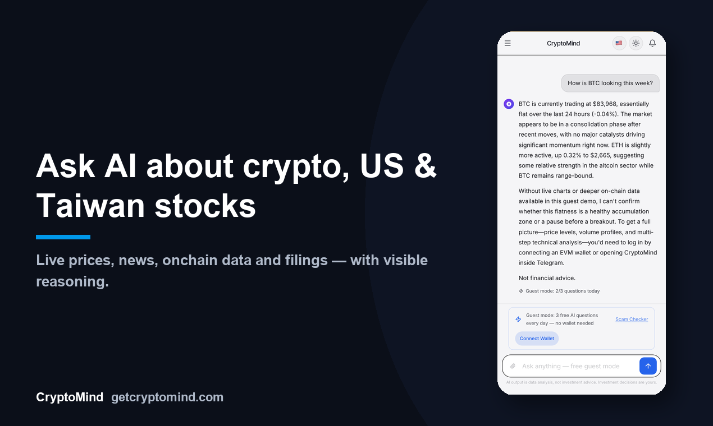
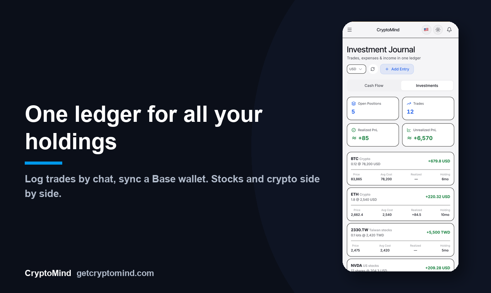
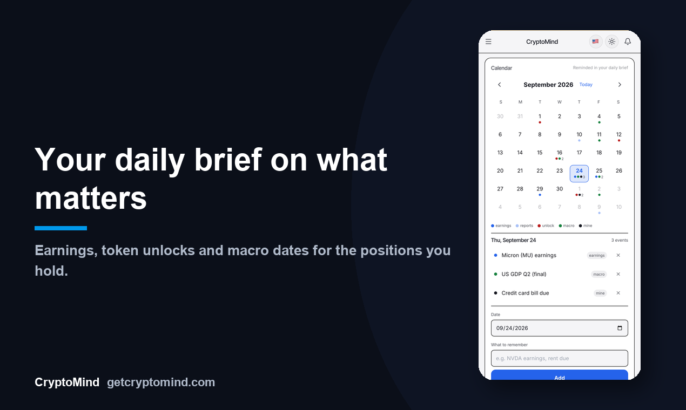

Live prices, news, on-chain data and company filings, with the reasoning shown. Log your trades and spending by chatting, and keep it all in one ledger.即時價格、新聞、鏈上資料與公司財報，並顯示推理過程。用聊天記錄交易與開支，全部放在同一本帳裡。
Analysis, not financial advice. CryptoMind never holds your funds and never trades for you.提供分析，不構成投資建議。CryptoMind 不持有你的資金，也不代為交易。



One assistant for following the market and keeping track of your own money.一個助理，同時幫你追蹤市場與整理自己的錢。
A tool-using agent pulls live prices, technicals, news, on-chain data and filings, then explains how it got there. Crypto, US and Taiwan stocks; market pages also cover HK, JP, KR, A-shares, commodities and forex.會使用工具的 agent 抓取即時價格、技術指標、新聞、鏈上資料與財報，並說明推論過程。涵蓋加密貨幣、美股、台股；市場頁另含港日韓陸股、商品與外匯。
Log expenses, income and trades by chatting. Nothing is saved until you approve a card. Bind a Base wallet and transfers sync as verified holdings.用對話記支出、收入與交易，按下確認卡片前不會儲存。綁定 Base 錢包後，轉帳會同步成已驗證持倉。
Earnings, Taiwan monthly revenue, token unlocks, FOMC / CPI / jobs reports and your own reminders, with an optional 08:00 daily brief.財報、台股月營收、代幣解鎖、FOMC／CPI／非農與你自己的提醒，可選每天 08:00 的早報。
Write down your own market calls. When they expire, they are graded against actual closing prices. Only you can see them.記下自己的市場判斷，到期後用實際收盤價評分，只有你看得到。
Free and no login: risk flags for EVM addresses plus community reports.免費、不用登入：EVM 地址的風險標記與社群回報。
Use 13 AI providers with your own API key, encrypted at rest. Guests get a few free questions every day.支援 13 家 AI 供應商，用你自己的 API 金鑰，加密儲存。訪客每天有少量免費提問。
Add friends and talk one-to-one with real-time delivery, typing indicators, replies, reactions and unsend. Call in the AI assistant from inside a chat to summarize the conversation or look something up together, without leaving it.加好友、一對一聊天，即時送達並顯示對方輸入中，支援回覆、表情與收回訊息。聊天時可以直接叫出 AI 助理整理對話內容或一起查資料，不用離開對話。
Pick the model and connect your own API key from 13 providers, and save several models per provider. The AI can propose things worth remembering about you, saved only after you approve. Turn the built-in skills on or off, or write up to 10 of your own.自選模型並接上自己的 API 金鑰（13 家供應商），同一家可存多個模型。AI 會提議值得記住的事，經你同意才會儲存。內建技能可以開關，也能自己寫最多 10 個。
CryptoMind is a data and analysis tool. It is not a broker, an exchange or an advisor.CryptoMind 是資料與分析工具，不是券商、交易所，也不是投資顧問。
One account and one conversation across every channel. The interface is available in English, Traditional Chinese, Simplified Chinese and Russian.同一個帳號、同一段對話，跨所有通路。介面支援英文、繁體中文、簡體中文與俄文。
Start without a wallet. Upgrade only if you want more.不用錢包就能開始，需要更多再升級。
3 AI questions a day, no wallet needed. Scam checker included.每天 3 題 AI 提問，不需錢包，含詐騙檢查。
More markets and tools. Also $108 a year. Paid in USDC on Base from a wallet you bind.更多市場與工具。年繳 $108。由你綁定的錢包在 Base 上支付 USDC。
Connect your own provider key and use the models you already pay for.接上你自己的供應商金鑰，用你已經在付費的模型。
Ask your first question in under a minute.一分鐘內問出你的第一個問題。
Open CryptoMind開啟 CryptoMind